Генеалогическая информация
Материалы по отдельным фамилиям Кюнлюма. Нажмите на фамилию, чтобы раскрыть текст или просмотреть генеалогические материалы.
Абаевы
Абаевы – балкарский род, сформировавшийся в Балкарском ущелье, в селении Кюнлюм. Абаевы изначально жили в Кюнлюме, откуда отдельные ветви рода переселились в Ишканты, Хызны-Эль, Абаевский, Кашхатау, Верхне-Кожоково и другие селения.
В настоящее время представители рода – балкарцы и карачаевцы. Однофамильцы есть и у других народов, в том числе у кабардинцев и осетин, что, вероятно, объясняется широким распространением имени Абай, ставшего впоследствии фамильным наименованием.
Согласно преданию, балкарские Абаевы являются потомками легендарного Басиата, который вместе со своим братом Бадинатом (Баделятом) стал родоначальником балкарской и дигорской феодальной знати. В Балкарию пришёл Басият, а его брат ушёл в Дигорию. От Басията происходят Абаевы, Жанхотовы, Айдаболовы и Шахановы.
Впоследствии от Абаевых отделились ветви Амирхановых и Боташевых, а от Айдаболовых – Биевых. В. М. Батчаев определяет время появления Басиата концом XIV века.
От Абаевых из Верхнего Кюнлюма отделились чегемские Гудуевы, за которыми сохранялся статус таубиев. Они жили в поселках Жора и Верхний Актопрак.
После установления советской власти весь род подвергся преследованиям из-за принадлежности к высшему сословию, и его представители были высланы за пределы Кабардино-Балкарии или покинули её по политическим причинам.
Из Абаевых известны: Абаев Сосран – олий Балкарии; Абаев Мисост – известный общественный деятель и историк; Абаев Султанбек – известный музыкант и скрипач; Абаев Асланмурза-Хаджи – известный религиозный деятель, приложивший много сил к исламизации населения Черекского ущелья.
Ацкановы
Относительно истории рода Ацыкановых существуют разные версии преданий. По одной из них Ацыкановы, Забаковы и Буштоковы являются родственными, по другой версии Ацыкана вырастили Забаковы, и потому принято считать, что они родственники.
В конце XIX века в Верхнем Кюнлюме упоминаются семьи Ацыкановых: Биту, Ильяса, Омара, Токуша, Тукума. В начале XX века в Верхнем Кюнлюме оставались семьи Бишу Ацыканова, Тукума Ацыканова, Ациканова Хаджи Османа, Ациканова Ибрагима, Ациканова Нохта-Паши и Ациканова Магомета.
В 1930-е годы Ацыкановы подверглись репрессиям. К моменту депортации балкарцев в Кюнлюме оставалась всего одна семья из некогда большого рода.
По одному из преданий, в Верхнюю Балкарию шесть поколений назад один из местных жителей привёз восьмилетнего мальчика, единственного уцелевшего после кровной мести. В Кюнлюме прошли его детские и юношеские годы, он женился, и в семье родилось трое сыновей. Имя старшего сына – Ацыкан – стало фамильным именем рода.
Потомки Ацыкана выбрали местом жительства Лескен II и стали кабардинскими Ацкановыми, а потомки Хамгока – Хамгоковыми. Генеалогическая линия Ацкановых представлена именами: Ацыкан – Мимболат – Афи – Хаспи – Руслан.
Существовала и линия Кушховых-Ацкановых. Шестнадцать семей шалушкинских Кушховых помнили о своём родоначальнике Юсуфе Ациканове, жившем в верхнем Кюнлюме. Ацикановы жили между кварталами Токаевых, Бекановых и Забаковых, недалеко от сельской мечети.
В настоящее время существует несколько ветвей, происходящих от Ацыкана: Ацыкановы и Ацикановы – балкарцы; несколько семей в Новой Балкарии, потомки Нухтар-Паши Ацыканова, носят фамилию Абаев; Ацкановы – кабардинцы; Кушховы – потомки Юсуфа, в настоящее время кабардинцы.
Байдаевы
Байдаевы – балкарский род, сформировавшийся в Кюнлюме. Здесь его представители проживали вплоть до переселения в Баксанское общество.
Известно, что в Верхний Баксан из Верхнего Кюнлюма примерно во второй половине XVII века переселился Исса Байдаев со всей своей большой семьёй. Поскольку он был уже стар, семьёй фактически руководил его сын Бийту.
Свое патрономическое имя Байдаевы вели от Байды, который, по одной из версий, сам переехал в Кюнлюм из Дигории.
Переселение из Балкарского в Баксанское ущелье произошло не сразу: какое-то время семья проживала и в Безенги. По переселении на Баксан Байдаевы получили хороший земельный надел в местности Койсурулген, где основали собственный посёлок Байдаево, существующий и в настоящее время в составе сельского поселения Эльбрус.
Баразовы
Род Баразовых в Кюнлюме в количестве одной семьи упоминается в книге А. Мусукаева и в схематическом плане селения рядом с семьёй Кахармановых.
В Верхнем Кюнлюме один двор Баразовых располагался выше дворов Булатовых, рядом с двором Кахармановых.
В списках жителей Кюнлюма за другие годы, в том числе на 1944 год, Баразовы не упоминаются. Вероятно, к этому времени они переехали в другой населённый пункт.
Бикановы
Бикановы – балкарский род, сформировавшийся в Балкарском ущелье. Они проживали в селениях Кюнлюм и Кашхатау.
Среди княжеских фамилий Балкарии особое место занимают Темиркановы. Со слов известного балкарского просветителя М. Абаева, таубии Бийкановы и Темиркановы являются потомками не Басиата, а Мимбулата.
Кто именно был Мимбулат, откуда он прибыл и сколько у него было детей, неизвестно. Известно лишь, что Темиркановы и Бийкановы состояли в тесном родстве с дигорскими баделятами, и эта связь поддерживалась вплоть до установления советской власти.
Боташевы
Боташевы – княжеская фамилия (таубии) Балкарского общества. Их история связана с ныне не существующим селением Нижний Кюннюм. Башня Боташ-къала располагалась между Нижним Кюннюмом и Шаурдатом на равнине; до наших дней сохранились фундамент и часть стены.
Согласно народным преданиям, Боташевы принадлежали к потомкам Басиата. В устной традиции сохранились разные версии генеалогии, в которых Боташевы связаны с Абаевыми и другими таубийскими фамилиями.
Исследования и архивные документы показывают, что к середине XIX века по Балкарскому обществу фиксировалась только одна семья Боташевых. Малочисленность рода в преданиях объяснялась вспышками чумы и межродовым соперничеством.
В легендах рассказывается, что Боташевы построили новое имение в Чайнашкы, а башню – в Кюнлюме. Они быстро усилились и стали влиятельными, что вызвало соперничество с Абаевыми. По преданию, после трагических событий продолжателем рода остался только один уцелевший потомок.
Архивные документы позволяют проследить позднюю родословную. Уверенно линия ведётся от Калтура, имевшего сыновей Магомета, Исмаила и Муссу, а также дочерей Гошеях и Минат. От Магомета происходили Тенгиз, Элькан, Индрис, Адильгирей, Коншау, Хамбий, Хангирей, Аслангирей, Хажимурза и Софият. От Исмаила – Нохта и Кучук. От Муссы – Таукан, Шатхем (Шитхан) и Алихан.
Часть Боташевых переселялась в Хабаз, часть была связана с Темиркановскими, а в ряде документов они проходили также под фамилией Абаевы, что объясняется общим происхождением и устройством таубийских ветвей.
Габоевы
Габоевы – балкарская фамилия, известная в Черекском и Чегемском ущельях Балкарии. Есть также однофамильцы в Северной Осетии, однако точных сведений о родстве с осетинскими Габоевыми не установлено.
По записанным сведениям, малкарские и чегемские Габоевы представляют собой один род. По данным А. Мусукаева, хронологически позже появилась ветвь Габоевых в Верхнем Актопраке. Её образовали сыновья Сары – Тебо и Абрек.
До переселения в Верхний Актопрак Сары жил в Верхнем Кюннюме. По словам Габоева Адиля Машуевича, в Черекской сельской общине до Сары жили три поколения Габоевых: Габо и Сога – Аксырт – Нако.
Жангуразовы
Жангуразовы – балкарский род, сформировавшийся в Балкарском ущелье. Они жили в селениях Зылгы и Кюнлюм, откуда отдельные семьи переселились в Хабаз, Жемталу, Нарткалу и Нартан. В настоящее время представители рода – балкарцы и кабардинцы.
Варианты написания фамилии: Жангуразов, Джангуразов, Жангоразов, Джангоразов, Жамгуразов, Жемгуразов и Товкуев.
Согласно преданию, история рода начинается с Жангураза, родившегося в середине XVI века в ауле Зылгы. У него было пять сыновей: Сибилци, Ацей, Голлу, Состар и Алан.
Во время эпидемии чумы Жангураз, предчувствуя смерть, велел сыновьям уйти в горы. После его смерти один из братьев, Состар, покинул родной аул, затем вернулся и поселился уже в Кюнлюме, где к тому времени жил его племянник Мусай со своим сыном Камгутом.
Род продолжился через Голлу и его сыновей Темиркана и Мусая, тогда как линия Состара через четыре поколения прервалась. Со временем потомки Жангураза расселились по другим селениям и образовали новые ветви.
К середине XIX века род состоял из ряда атауулов: Абрек, Туран, Башчы, Темирцок, Муса, Кици в Кюнлюме и Байремука, Кыдена и Асланбека в Зылгы. Позже отдельные семьи переселялись в Жемталу, Кахун, Фардык, Бороково, Чегет Эль, Хасанью и другие селения.
8 марта 1944 года Жангуразовы из Кюнлюм Эль были насильственно депортированы вместе со всем балкарским народом в Казахстан и Кыргызстан. Всего были репрессированы 53 человека, 21 из которых умер в местах депортации. После возвращения в 1957 году им не позволили восстановить село, и они расселились в Верхней Балкарии и других населённых пунктах КБР.
Из кюнлюмской ветви рода известны Жангуразов Ахия-хаджи Тавшурович, Жангуразов Каншау Цибиевич и Жангуразов Абулла Махмутович.
Зоруевы
Зоруевы – балкарский род, сформировавшийся в Кюнлюме. Они были небольшим родом и жили в своём квартале на левом берегу Черека Балкарского в Нижнем Кюнлюме.
Ещё в начале XX века во время сильных ливней имел место смыв домов в прибрежной полосе Кюнлюма, в числе которых оказались и дома Зоруевых.
В то время шла агитационная кампания в пользу переселения в Турцию, и кюнлюмские Зоруевы попросились в списки переселенцев и все уехали в Турцию. Этим объясняется тот факт, что в советское время они уже не упоминаются в документах.
Кахармановы
Род Кахармановых в Кюнлюме известен с конца XIX века. В списке жителей Кашхатау за 1877 год, ещё не переселившихся из Балкарского общества, значится Ортабай Кахарманов 15 лет вместе с матерью Кахарман 55 лет.
Он же упоминается в раскладочных списках по селению Кюнлюм за 1900 год, что показывает, что семья продолжала жить там и в это время.
К 1944 году в списках депортированных эта фамилия уже не упоминается, вероятно, к тому времени они переехали в другой населённый пункт.
В Верхнем Кюнлюме Кахармановы в количестве одного двора жили рядом с Баразовыми.
Магреловы
Магреловы в настоящее время – балкарский род, корни которого уходят в Мегрелию.
По данным, приведённым А. Мусукаевым, дед столетнего Касая Мандайевича Магрелова – Тембо – был пленён верхнебалкарцами и остался у Абаевых в Верхнем Кюнлюме. Поскольку его родиной была Мегрелия, а точнее село Онколак, за ним закрепилась фамилия Магрелов.
Тембо принял ислам, женился на балкарке, и в их семье родился сын Мандай. У Мандая, женатого на Зокаевой, было два сына: Касай и Жанхот.
У Касая были сыновья Абдулкерим, Хажимурат, Мусса, Исса и Али. У младшего брата Касая, Жанхота, были сыновья Мухамед, Аки и Кубади. В числе внуков назывались Борис, Тахир, Аллах-Берды, Аслан и Ахмат.
Согласно посемейному списку жителей Кашхатау на 1909 год, семья Магрелова Мандая Темоевича с сыновьями Касаем, Жанхотом и Алием уже числилась жителями Кашхатау. Следовательно, переселение из Кюнлюма произошло в конце XIX – начале XX века.
Маммеевы
Согласно преданиям, Маммеевы произошли от общего предка по имени Мамме, у которого было четыре сына: один обосновался в Кенделене, трое других – в Балкарском обществе, в том числе в Верхней Балкарии. Впоследствии четыре семьи проживали в одном месте в селении Кюннюм, напротив мечети с южной стороны от моста.
Предание о том, что все Маммеевы являются родственниками, подтверждалось ДНК-анализами двух представителей фамилии. По данным генетического теста Big Y700 Маммеевы относятся к гаплогруппе R1B, субкладу Ү100087. По этим данным выяснилось также родство со множеством татарских родов на территории Татарстана.
В настоящее время Маммеевы проживают в Верхней Балкарии, Верхней и Нижней Жемтале, Кашхатау, Нальчике, Нижней Балкарии, Прохладном, Ташлы-Тале, Кенделене и Тырныаузе.
В исторической литературе Маммеевы связаны родственными узами с несколькими родами. Сам Мамме считался сыном Таукена, родоначальника рода Таукеновых. От Каракиши Таукенова, переселившегося в Нижнюю Жемталу, ведут начало Сокуровы.
Родословная Мамме в настоящее время продолжается по двум линиям: собственно балкарской ветви Маммеевых и кабардинской ветви Мамовых, потомков переселившихся из Верхней Балкарии в Жемталу.
Ассока Маммеев стал жителем Нижней Жемталы, а его потомки стали Мамовыми. Уже в переписи 1905 года в Верхне-Кожоковском отмечена семья Маммева Маши Аслангериевича и его брата Бекмурзы. К 1944 году Маммеевы проживали в Туура Хабла, Кюнлюме, Кенделене и Жемтале. В настоящее время Маммеевы и Мамовы продолжают поддерживать родственные отношения.
Мисаковы
Мисаковы – балкарский род из Черекского ущелья. В Кюнлюме был известен Мисаковский квартал. Кроме того, у них было поселение в местности Догуат, откуда они переселились в Жанхотово. Рядом с Кашхатау находился склеп самого Мисаки, ныне разрушенный.
В настоящее время представители рода – балкарцы и кабардинцы.
Согласно преданию, родоначальником Мисаковых был Мисака, прибывший в Балкарию из Борагана, в междуречье Терека и Сунжи. Он остановился у Малкаровых, влюбился в их сестру и, по преданию, завладел их имуществом и землёй. После этого он привёл из плоскости и других людей.
Потомки Мисаки стали носить фамилию Мисаковых и относились к высшему сословию Балкарии наряду с Абаевыми, Айдаболовыми, Биевыми, Жанхотовыми, Жаниюковыми, Кучуковыми, Боташевыми, Амирхановыми и Темиркановыми.
Начиная с XVII века Мисаковы активно контактировали с кабардинской и дигорской феодальной знатью, вступали с ними в браки и переселялись в плоскостные селения.
Отдельная ветвь – Мисаковы-Соховы. Абрек Мысычев, или Мысакаев, шесть поколений назад покинул Верхнюю Балкарию, сначала пытался устроиться в Жанхотово, но затем выбрал Докшоково (Старый Черек). За частые отъезды его называли Сэхъу (Сохов). Позже он осел, женился, и от его сына Тахира пошёл род Соховых.
Сабанчиевы
Генеалогическое дерево рода Сабанчиевых.
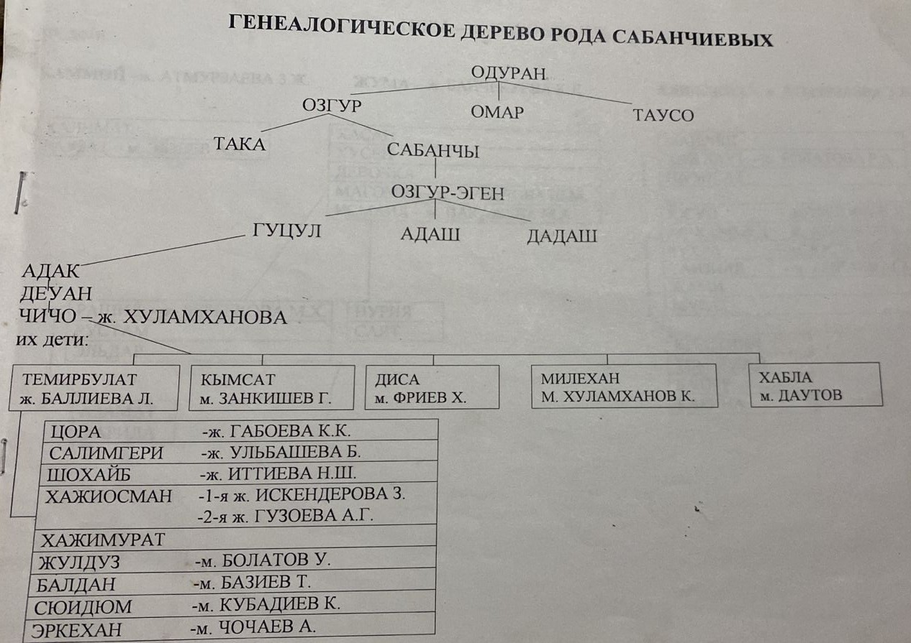
Табаксоевы
Сканированные страницы с генеалогическими материалами по роду Табаксоевых.
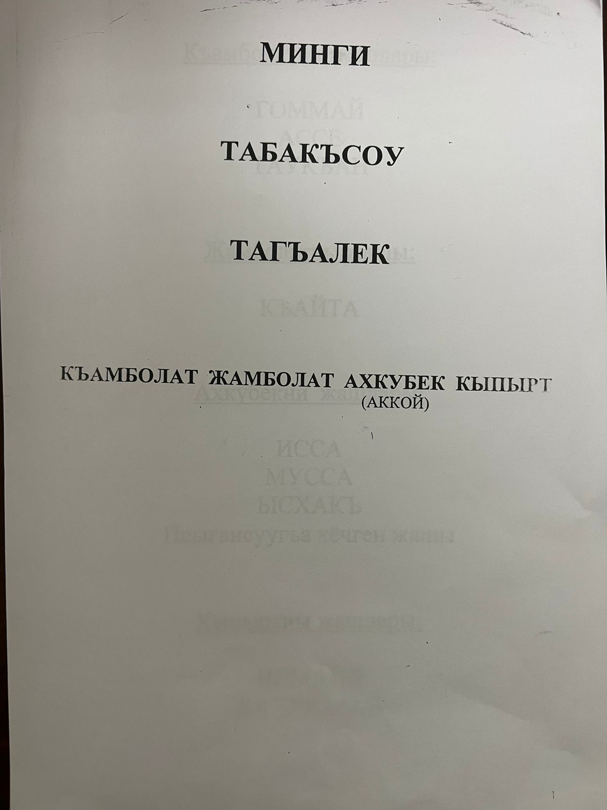
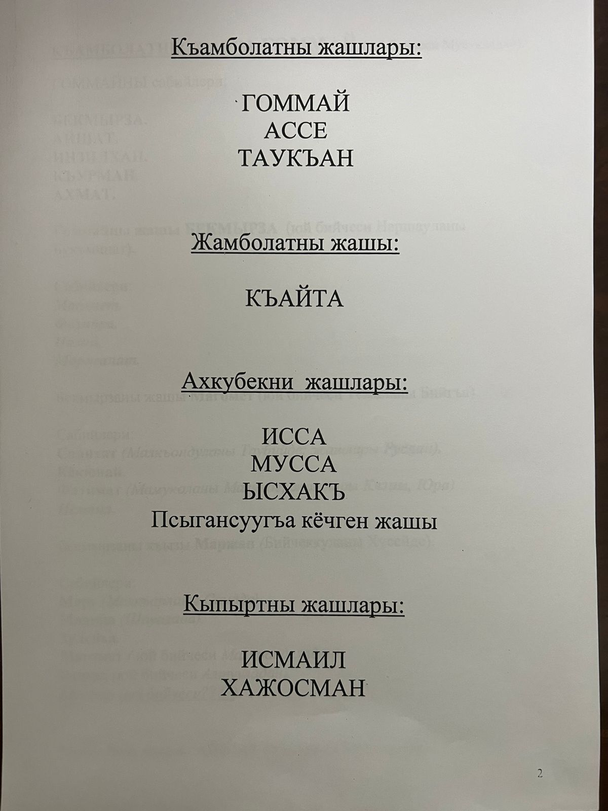
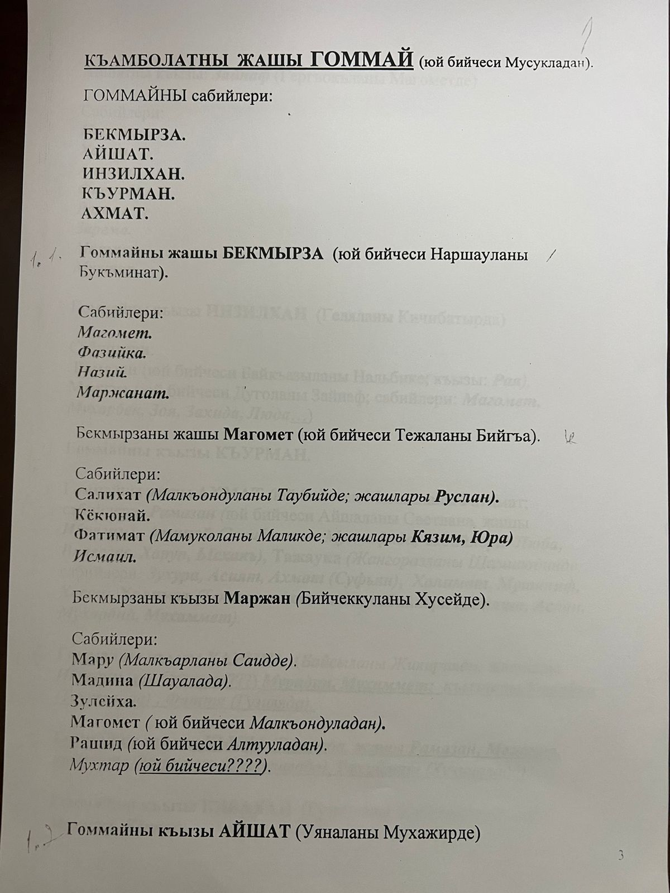
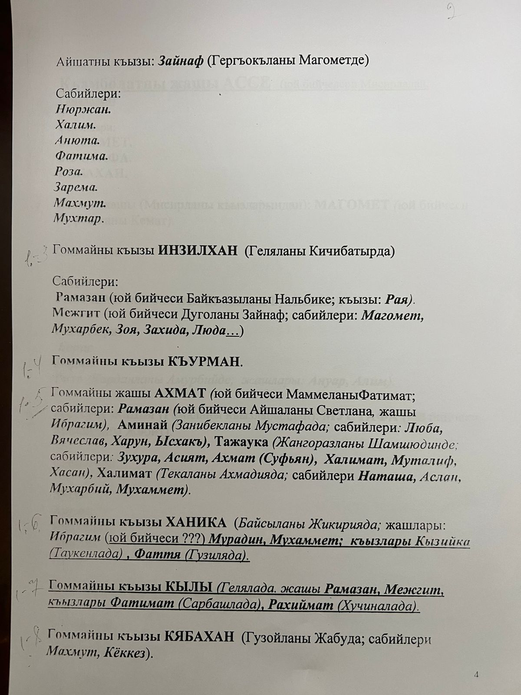
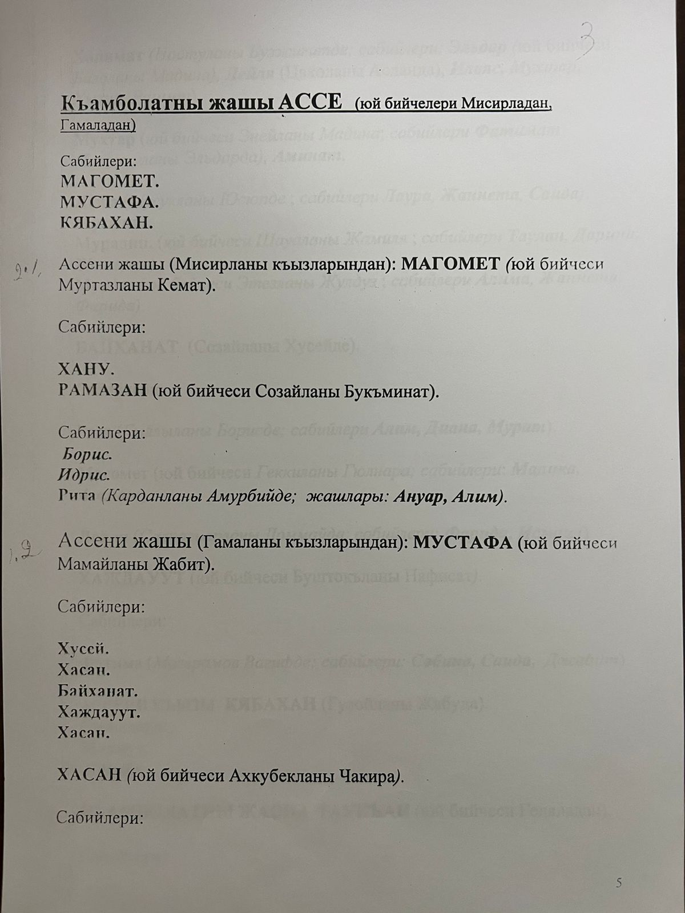
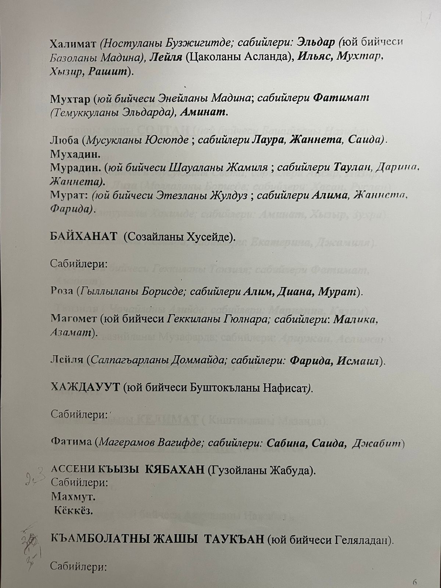
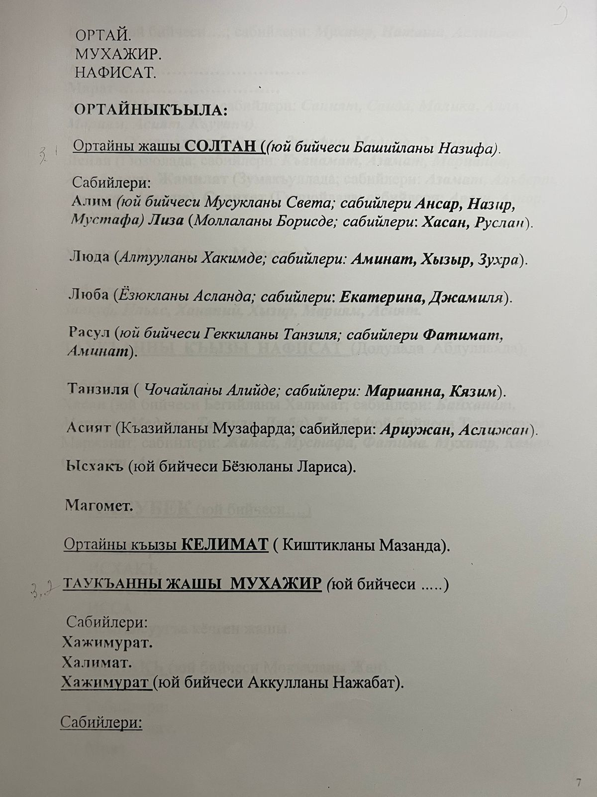
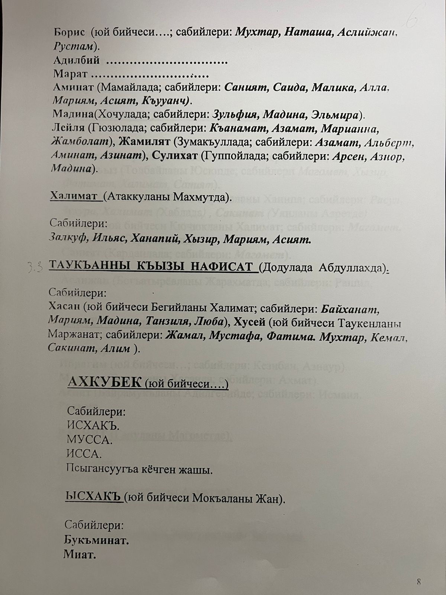
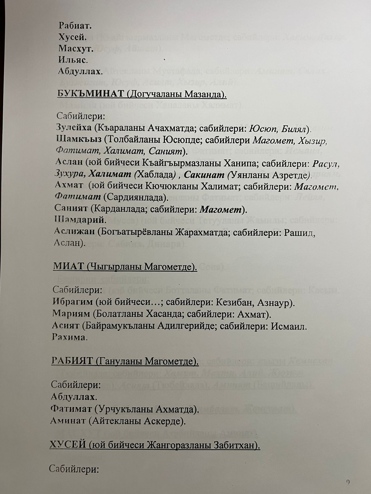
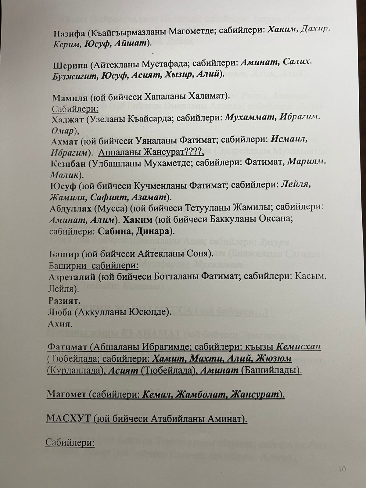
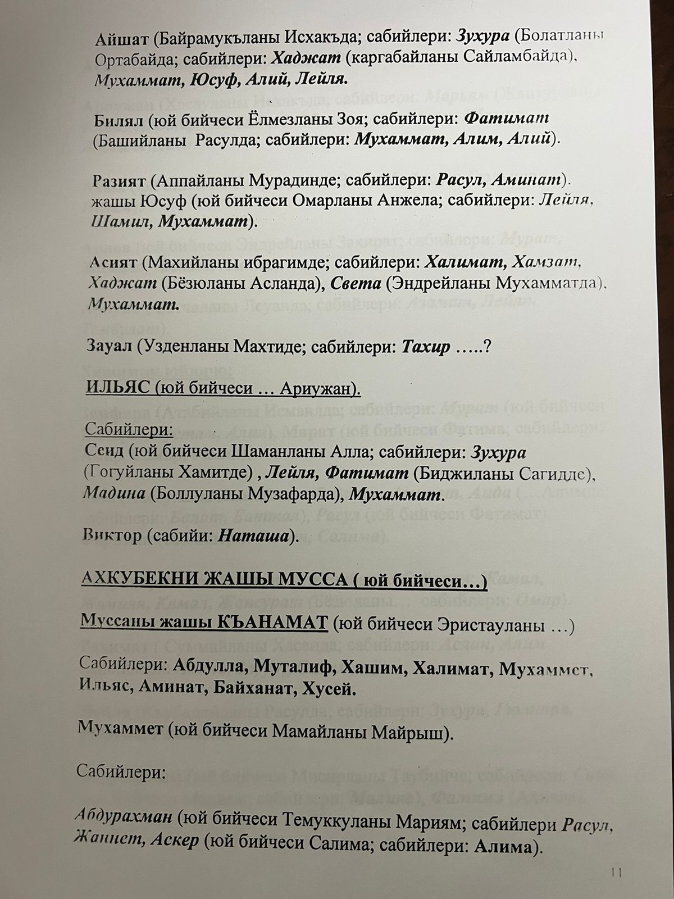
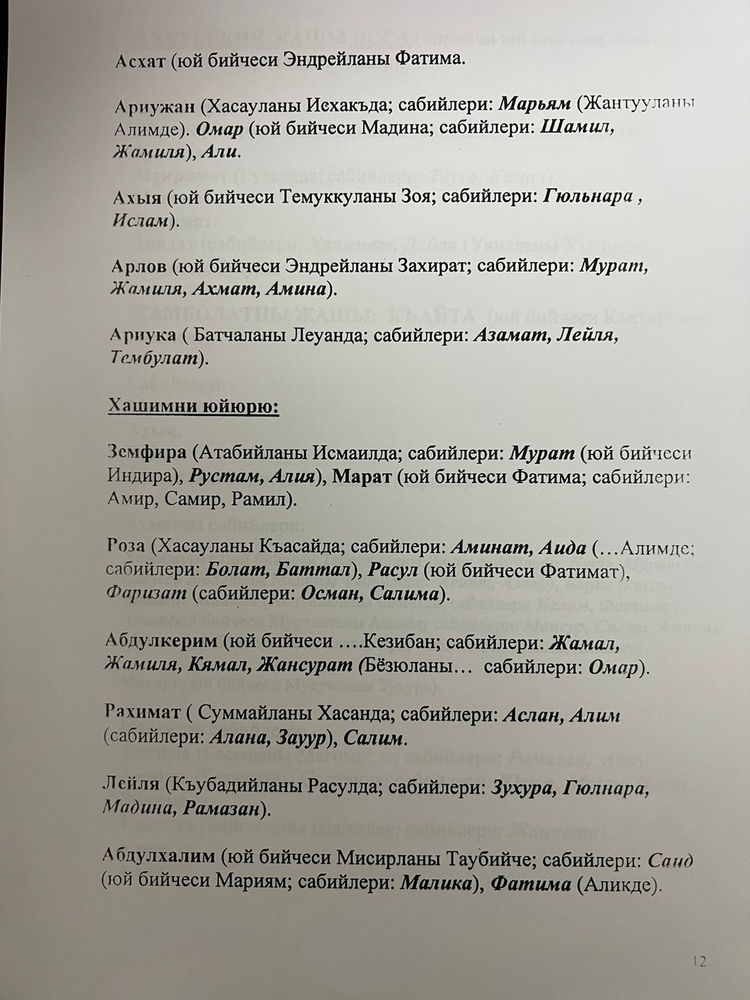

Такаевы
Такаевы – балкарский род, сформировавшийся в Верхнем Кюнлюме и живший в своём квартале.
Квартал располагался выше мечети, рядом с кварталом Ацкановых.
В списках спецпереселенцев на 1944 год представителей этой фамилии в Кюнлюме уже не значится, вероятно, они проживали уже в другом селении.
Темиркановы
Темиркановы – балкарский род, сформировавшийся в Балкарском ущелье. Они жили в селениях Кюнлюм и Темиркановский. В настоящее время представители рода – балкарцы, кабардинцы и осетины.
Среди княжеских фамилий Балкарии Темиркановы занимают особое место. Одно из ответвлений называлось Казбековыми. По словам М. Абаева, таубии Бийкановы и Темиркановы являются потомками не Басиата, а Мимбулата. Темиркановы и Бийкановы состояли в тесном родстве с дигорскими баделятами, и эта связь сохранялась вплоть до установления советской власти.
Изначально Темиркановы жили в Кюнлюме, затем их потомки проживали в Ишканты, а позже – в ауле Темиркановском в районе Ташлы-Талы. Уже в начале XIX века отдельные представители рода жили на равнине и владели участками по реке Хызны-Суу и её притокам.
В конце XVIII века часть Темиркановых переселилась из Балкарского общества в Дигорию. В первой половине XIX века они вернулись в Балкарию и жили в Хызны-Баши, образовав небольшое поселение. Со временем осетинская ветвь рода стала более многочисленной.
В архивных документах Темиркановы и Казбековы упоминаются в связи с земельными, наследственными и сословными делами XIX века. В документах 1886 года упоминается Темирканов Боташ Асланбекович и его семья в посёлке Темиркановском.
Токуевы
Токуевы – балкарский род, сформировавшийся в Балкарском ущелье в начале XVIII века. Токъуй и его спутник Цана мигрировали из Сванетии. Сначала они временно обосновались в местности Хумашхи, а затем переселились в Нижний Кюнлюм Балкарского общества.
Позже пути Токъуя и Цаны разошлись: Токъуй остался в Нижнем Кюнлюме, а Цана переселился в Фардык. Именно они стали родоначальниками современных фамилий Токуевых и Цанаевых.
В балкарской этнической традиции такое происхождение обозначается выражениями «бир от жагъадан айырылгъанла» и «бир къазаннга къарагъанла».
В четвёртом поколении от Токъуя в роду сформировались три основных ответвления: Къуатлары, Зашаулары и Исламлары. В начале XX века Токуевы появились в Нижнем Чегеме, а в середине 1920-х годов часть представителей рода переселилась в Ташлы-Талу и Хасанью.
Из рода Токуевых известны Токуев Къуат Даутович, Токуев Кёккез Мырзабекович, Токуевы Даут Токмакович и Хажомар Кучукович, а также Хажбекир, Хажмурат и Хаждаут Бюрчеевичи.
Хаиркизовы
Фамильное имя Хаиркизовых из Нижней Жемталы происходит от патронимического имени женщины Хаир-Кыз.
Четыре поколения назад Деса Саласкиров вместе с женой Хаир-Кыз Умаратовой и сыном Байрамуком уехал из Буйнакска и поселился в Верхнем Кюнлюме. Не успели они устроиться в селе, как Деса умер, и Хаир-Кыз с сыном перебралась в Нижнюю Жемталу, где её имя закрепилось за сыновьями и внуками.
В настоящее время написание фамилии несколько изменилось: Хаиркизовы – Харкизовы. Представители рода – кабардинцы.